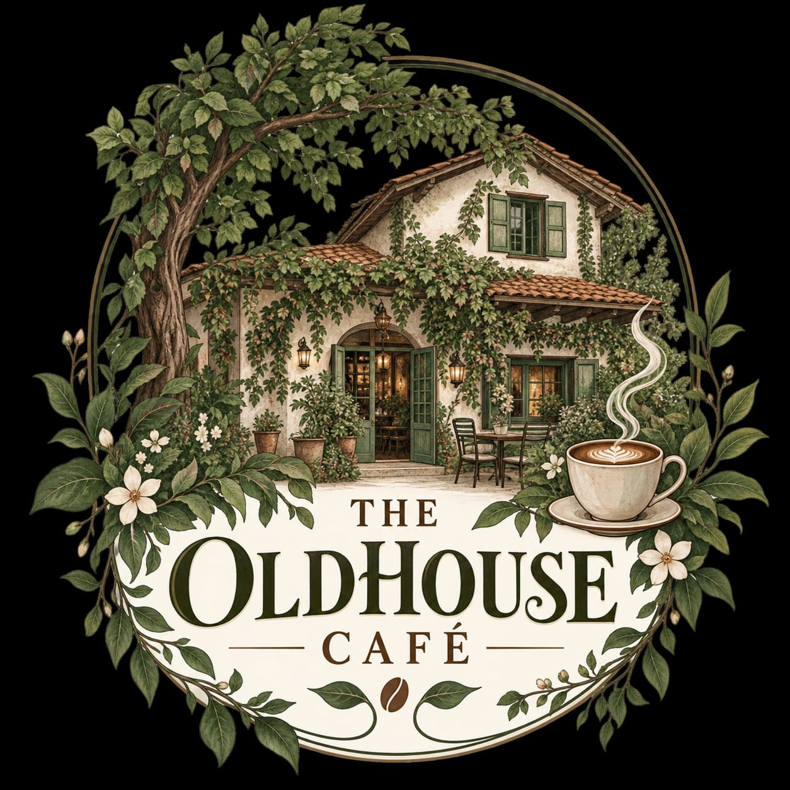
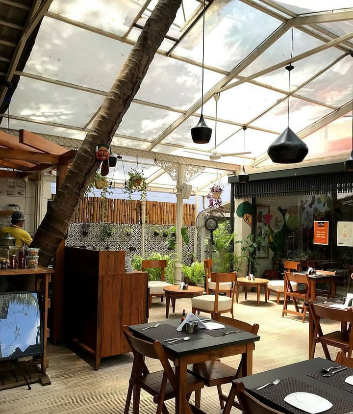
THE PLACE
Located on Jhansi Rani Lakshmi Bai Road, The Old House brings together the character of a traditional Mysuru residence with the relaxed atmosphere of a contemporary café.
Its old-world architecture, greenery and peaceful seating areas make the surroundings an important part of the experience.
Traditional architectural details, natural surroundings and a warm, home-like atmosphere.
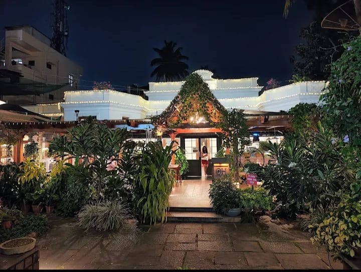
01 · ARCHITECTURE
The Old House occupies a property whose character comes from its traditional, residential-style architecture.
Rather than feeling like a newly constructed commercial space, the property retains a sense of age and individuality.
Old-house character · Traditional details · Intimate spaces
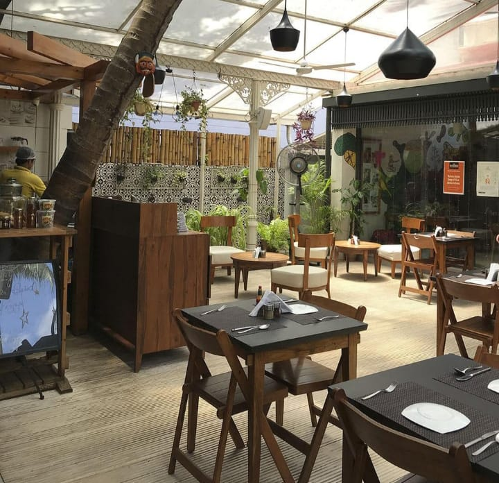
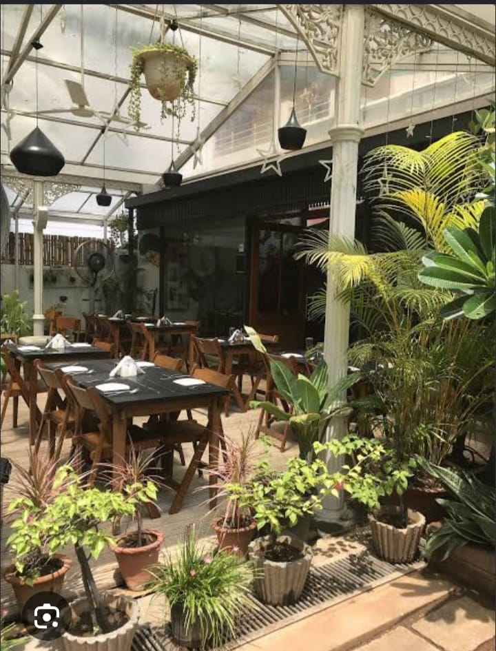
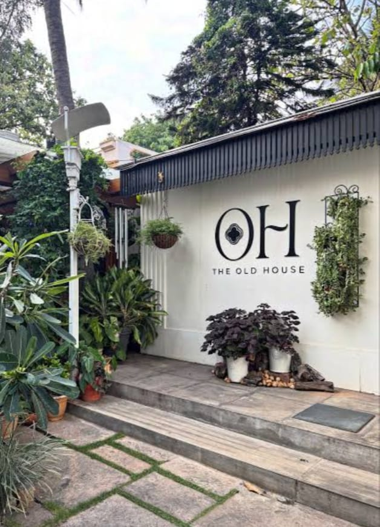
02 · THE GARDEN
Greenery is one of the defining features of The Old House. Plants, trees and garden seating create a calm contrast to the busy roads outside.
The outdoor spaces are especially suited to slow afternoons, conversations and simply enjoying the surroundings.
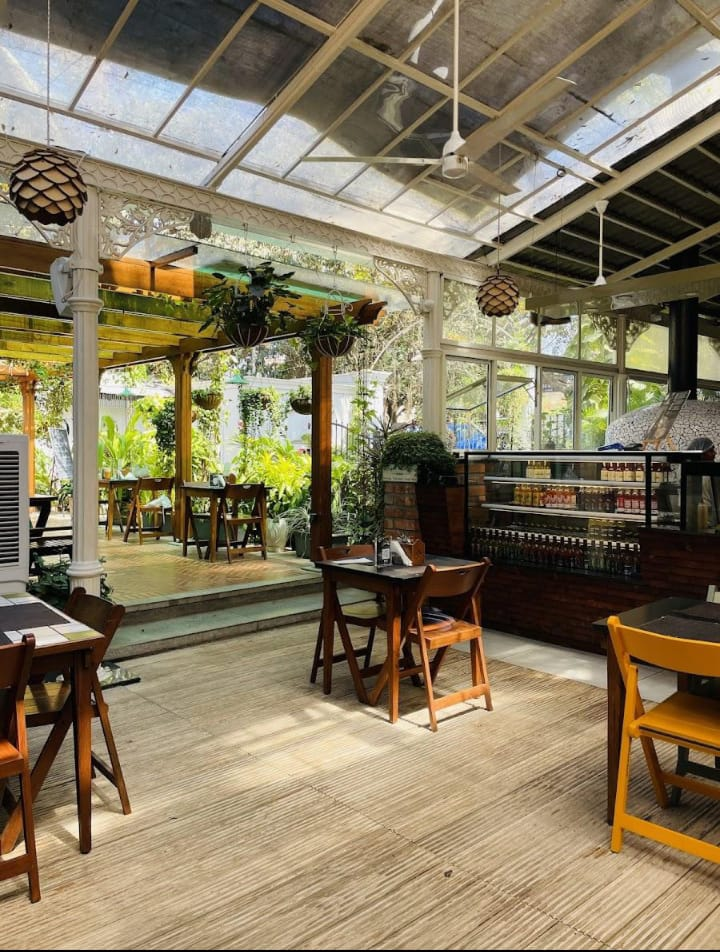
03 · THE ATMOSPHERE
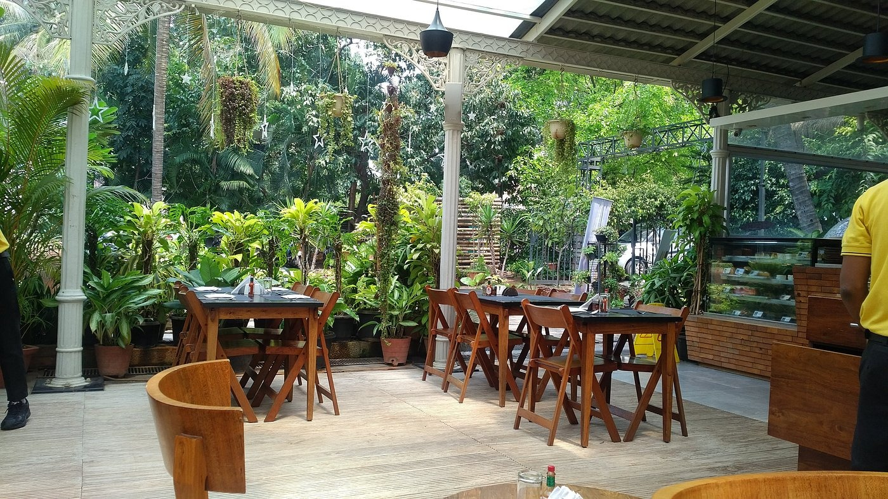
Green surroundings and relaxed outdoor seating.
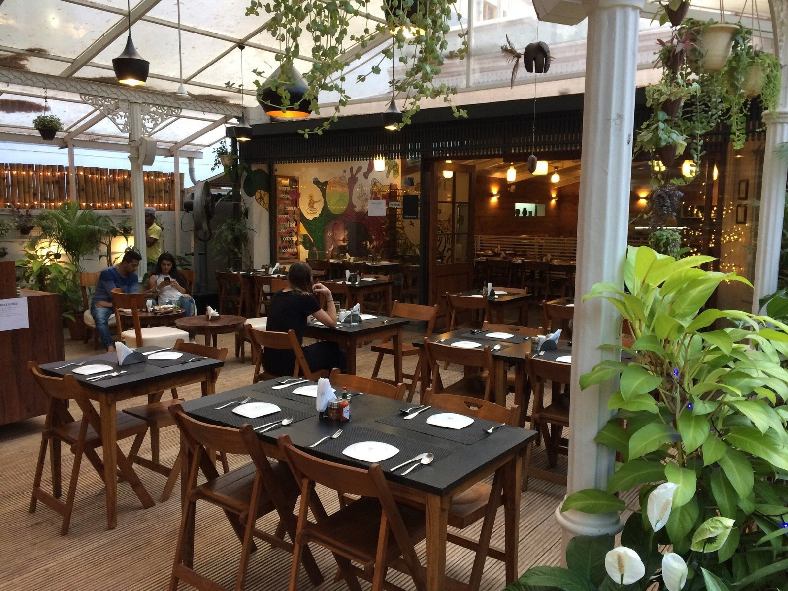
Cosy indoor spaces with the feeling of an old family home.
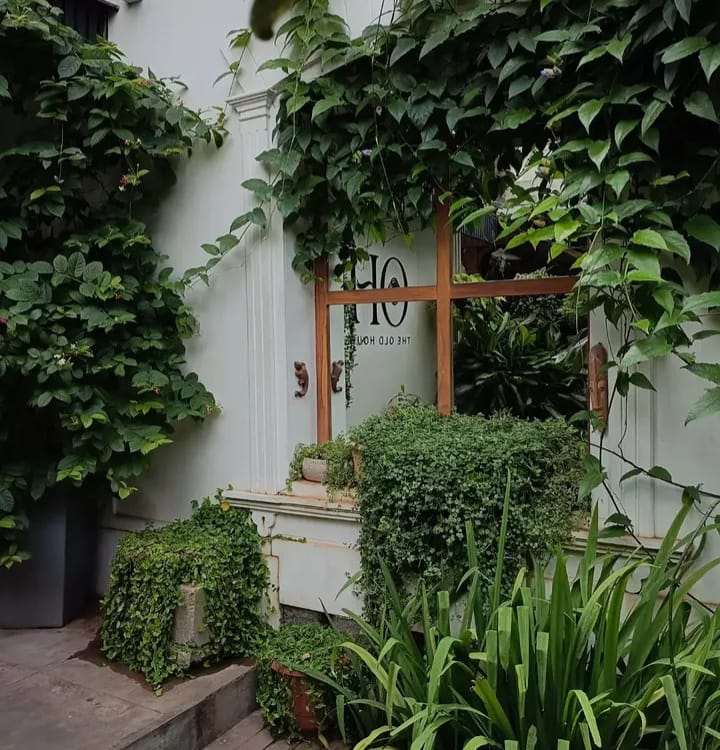
A setting made for slowing down and enjoying the surroundings.
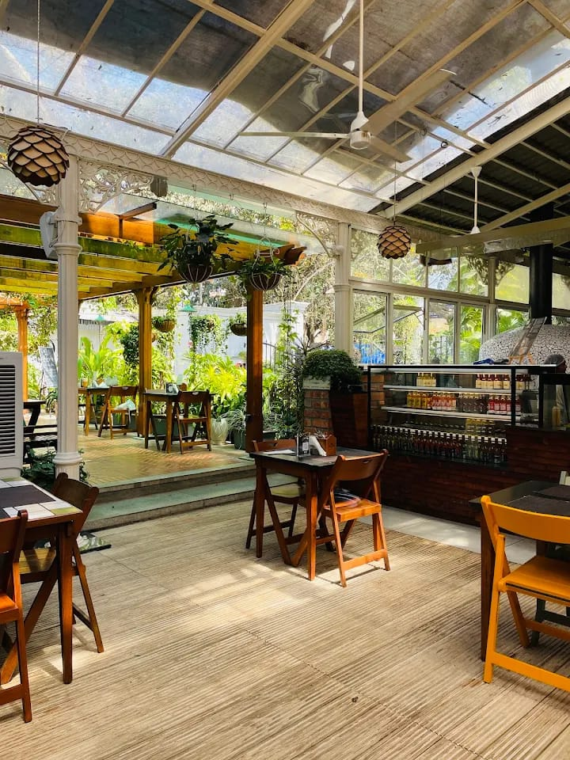
04 · THE EXPERIENCE
The Old House is designed around a simple idea: create a space where people can pause.
Whether you're sitting beneath the greenery, exploring the old-house details or enjoying the warmth of the interiors, the surroundings remain an essential part of the experience.
451, K.G. Koppal,
Jhansi Rani Lakshmi Bai Road,
Mysuru, Karnataka
OLD HOUSE · MYSURU